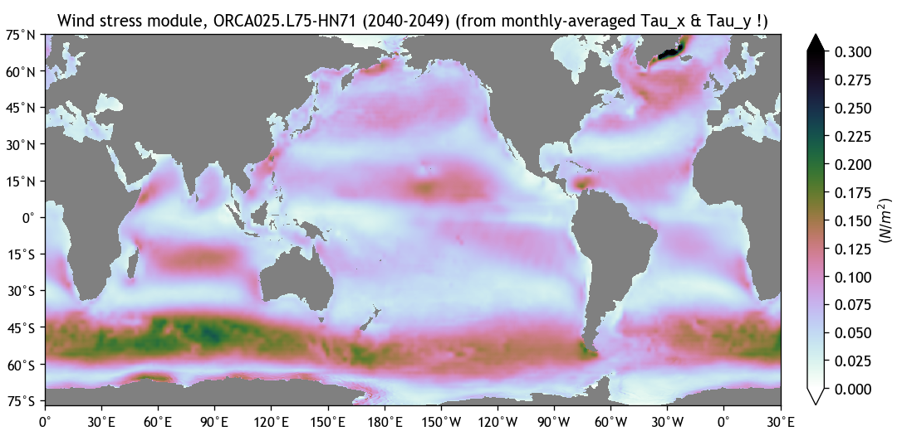
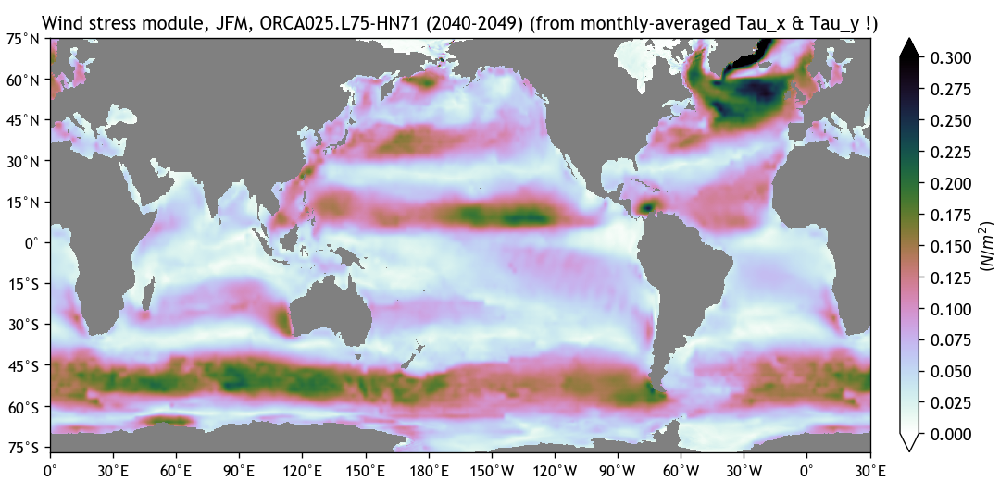
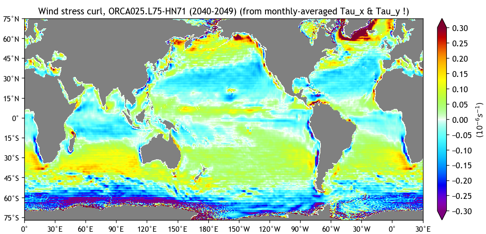
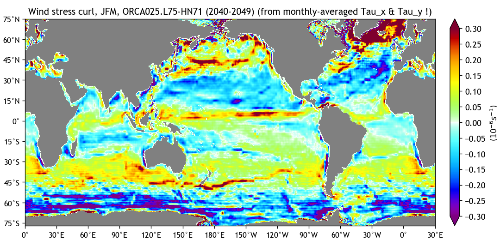
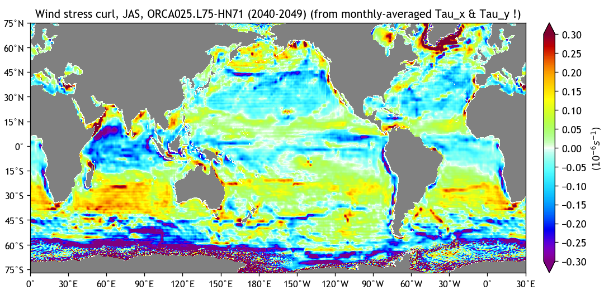

Ocean diagnostics for ORCA025.L75 experiment "HN71"
Coupled to atmospheric model: IFS T0
Info: NEMO 3.6 + LIM 3 (EC-Earth 3.2.2)
Simulation mastermind(s): SMHI / Uwe
Last updated: 2017-05-11 at 18:21:27
Created on 'TRIOLITH.nsc.liu.se'
Surface Wind Stress Module (on NEMO grid)



Surface Wind Stress Curl (on NEMO grid)



Surface Wind Speed Module (on NEMO grid)


Page and diagnostics created with BaraKuda...